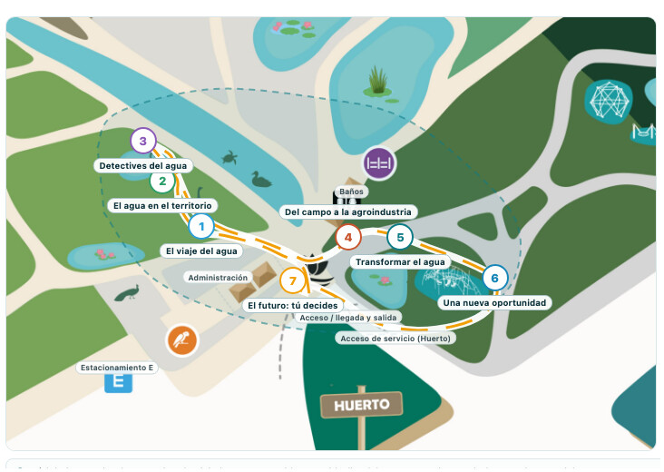

Postulación · Espacio interactivo de educación sobre el agua
Agua Viva · Experiencia interactiva del agua en el Maule
Siete módulos interactivos en el sector de entrada del Jardín Botánico & Arboretum de la Universidad de Talca · Talca, Región del Maule
1. Presentación del proyecto
El agua es el recurso más estratégico de la Región del Maule. La región combina una vocación agrícola y agroexportadora de primer nivel con ciudades en crecimiento, ecosistemas únicos y un territorio que depende, casi por completo, del ciclo natural de la cordillera: nieve, lluvia, ríos y napas subterráneas. Sin embargo, la mayoría de las personas no ha visto nunca cómo funciona ese ciclo, dónde se usa el agua en la cadena productiva ni qué ocurre con ella después.
Agua Viva propone una experiencia educativa al aire libre de carácter no formal: siete módulos interactivos que permiten tocar, medir, manipular y decidir sobre el agua. Desde el viaje del agua por el territorio del Maule hasta su tratamiento y reutilización, cada módulo conecta un principio científico con una situación real de la región, en especial con la agroindustria frutícola, actividad característica del Maule.
La experiencia se emplaza en el sector de entrada del Jardín Botánico & Arboretum de la Universidad de Talca, un espacio de alto flujo de visitantes, accesible, con servicios (baños, administración, estacionamiento) y con un paisaje excepcional: el arroyo, las lagunas y la vegetación del jardín se convierten en parte del relato museográfico.
El proyecto considera una institución asociada que entregará retroalimentación técnica al diseño y a los contenidos, validando el guión museográfico, los experimentos y los mensajes científicos antes y durante su implementación.
2. Objetivos
Objetivo general
Habilitar una experiencia educativa interactiva que permita a la comunidad comprender el ciclo, los usos, el tratamiento y la reutilización del agua, con énfasis en la agroindustria de la Región del Maule, mediante siete módulos de experimentación directa emplazados en el sector de entrada del Jardín Botánico & Arboretum UTalca.
Objetivos específicos
Comunicar el ciclo del agua y su recorrido por el territorio del Maule, visibilizando su variabilidad y disponibilidad limitada.
Explicar cómo se distribuye el agua entre ciudades, agricultura, industria y ecosistemas, y qué decisiones involucra su reparto.
Introducir parámetros científicos de calidad del agua (pH, conductividad eléctrica y turbidez) mediante medición directa.
Visibilizar dónde y cómo se usa el agua en la producción y el procesamiento de frutas, identificando oportunidades de ahorro.
Experimentar los principios de separación de sólidos, sedimentación y filtración usados en el tratamiento del agua.
Comprender el reúso del agua y la economía circular del recurso bajo condiciones de calidad apropiadas.
Promover decisiones informadas y corresponsabilidad ciudadana en la gestión hídrica del Maule.
Implementar la experiencia bajo criterios de accesibilidad universal, sostenibilidad y bajo mantenimiento.
3. Público objetivo y enfoque educativo
La experiencia está diseñada para el público natural del jardín botánico y para visitantes que se suman especialmente por esta muestra:
Familias y público general que visita el jardín, incluidos niños y niñas desde los 6 años.
Escolares de enseñanza básica y media, en especial 5° básico a 4° medio, junto a sus docentes.
Estudiantes de educación superior y técnica y grupos de visita de la propia universidad.
Visitantes regionales y turistas interesados en la identidad agroproductiva del Maule.
El enfoque es de aprendizaje basado en la indagación: cada módulo parte de una pregunta, propone una interacción práctica y cierra con un mensaje concreto. La experiencia se alinea con el currículum nacional de Ciencias Naturales y Ciencias para la Ciudadanía, y con el ODS 6 (agua limpia y saneamiento), aportando a la educación para la sostenibilidad de la región.
4. Emplazamiento y zona de intervención
El proyecto se ubica en el sector de entrada del Jardín Botánico & Arboretum de la Universidad de Talca. La zona de intervención comprende la plaza de acceso, el sendero poniente que acompaña el arroyo, el sector de servicios (baños y administración) y el inicio del camino oriente hacia la laguna de juegos.
Los siete módulos se distribuyen a los costados del camino, nunca sobre el eje central de circulación, configurando un bucle de recorrido de aproximadamente 250 metros que comienza y termina en el acceso principal. De esta forma:
Se mantiene libre el flujo peatonal habitual del jardín (ancho útil de circulación mayor a 3 m).
Se conserva sin obstrucciones el acceso a baños, administración y estacionamiento.
Los visitantes que no participan de la muestra pueden recorrer el jardín sin desvíos significativos.
La experiencia queda integrada al paisaje: el arroyo, las lagunas y la vegetación existente forman parte del guión.

Figura 1. Propuesta de distribución, recorrido e interacción. Mapa interactivo (navegable, con el detalle de cada módulo): raulrojas22.github.io/agua-viva-utalca
5. Descripción de la experiencia de visita
La visita está pensada como un recorrido autoguiado de 35 a 45 minutos, apoyado por monitores y por el “Pasaporte del agua”: un pequeño mapa-ficha que cada visitante (o grupo familiar) sella al completar cada módulo. El pasaporte ordena la visita, invita a completar los siete desafíos y culmina con un compromiso personal en el último módulo.
Llegada y orientación. En el acceso, un tótem de bienvenida presenta la pregunta que atraviesa toda la experiencia: ¿de dónde viene el agua que usamos y qué hacemos con ella en el Maule? Un panel con el plano de los 7 módulos permite elegir entre recorrido completo (1→7) o módulos individuales.
El viaje del agua (módulo 1). En el sendero que bordea el arroyo, una maqueta del Maule invita a “hacer llover” y seguir el agua desde la cordillera hasta el valle. La pregunta: ¿de dónde viene?
El agua en nuestro territorio (módulo 2). Una mesa de compuertas permite repartir el agua entre ciudades, campo, agroindustria y ecosistemas, descubriendo que decidir es repartir.
Detectives del agua (módulo 3). Junto a la laguna del cisne, tres estaciones de análisis permiten medir pH, conductividad y turbidez, completando una ficha de detective. Descubrimiento central: el agua transparente no siempre es agua segura.
Del campo a la agroindustria (módulo 4). De regreso hacia el sector de servicios, una línea de proceso frutícola en miniatura plantea el desafío de producir con la menor cantidad de agua: riego, lavado, selección, embalaje y frío.
Transformar el agua (módulo 5). Un tren de tratamiento transparente permite ver qué retira cada etapa (rejilla, sedimentación, filtros) y qué no puede retirar.
Una nueva oportunidad (módulo 6). Dos circuitos gemelos, uno de uso único y otro con recirculación, permiten comparar la demanda de agua nueva de cada sistema y cuantificar el ahorro.
El futuro del agua: tú decides (módulo 7). De vuelta en la plaza, un tablero de escenarios reales del Maule (sequía, heladas, crecimiento productivo) invita a decidir estrategias y votar. Una pantalla muestra las consecuencias de las decisiones del grupo y cierra la visita con un mural de compromisos personales. Salida por el mismo acceso, cerrando el bucle.
Mediación. La experiencia opera con apoyo de monitores (estudiantes y egresados de la universidad, capacitados con el guión museográfico) que acompañan las mediciones, resuelven dudas y registran observaciones para la mejora continua. La gráfica de los módulos permite también la visita completamente autoguiada.
Materiales de apoyo. Pasaporte del agua, ficha del detective, señalética de alto contraste y códigos QR con contenidos ampliados, audiodescripción y versión de lectura fácil.
6. Guión museográfico preliminar
A continuación se presenta el guión preliminar de cada módulo: pregunta detonante, idea fuerza, interacción, mensaje clave y recursos. Este guión será revisado y validado con la institución asociada.
1 El viaje del agua: ¿de dónde viene?
“¿De dónde viene el agua que usamos en el Maule?”
Idea fuerzaEl agua que usamos nace en la cordillera y recorre un ciclo natural e interconectado: precipitación, nieve, ríos, embalses, infiltración y napas; los ecosistemas también forman parte del ciclo.
InteracciónMaqueta 3D del territorio del Maule (cordillera–valle–costa) con bomba manual, “nubes” y compuertas. Los visitantes hacen llover, conducen el agua por el río, la infiltran en el valle y la devuelven al ciclo, observando cómo la disponibilidad cambia según las condiciones ambientales y las estaciones.
Mensaje claveEl agua es finita y variable: no llega sola ni todos los años por igual. Cuidarla empieza por conocer su ciclo.
RecursosMaqueta con circuito cerrado, bomba de accionamiento manual, piezas manipulables, gráfica del ciclo del agua del Maule. 3–5 min3–5 personas a la vez
2 El agua en nuestro territorio: ¿alcanza para todos?
“¿Alcanza el agua para todos los usos del Maule?”
Idea fuerzaEl agua de la cuenca se reparte entre consumo humano, agricultura y agroindustria, industria y ecosistemas. En el Maule la agricultura es la gran usuaria del agua.
InteracciónMesa de distribución con compuertas y cuatro destinos señalados. Los visitantes derivan el agua y un estanque indicador muestra el nivel restante. A través de varios intentos descubren los efectos de sus decisiones sobre los demás usos.
Mensaje claveRepartir el agua es decidir; toda decisión tiene consecuencias para otros. Existen criterios y acuerdos para hacerlo de forma justa y sostenible.
RecursosMesa de canales con compuertas y bomba manual, estanque indicador, tarjetas de usuarios del agua. 3–5 min
3 Detectives del agua: ¿cómo sabemos su calidad?
“¿De qué manera sabemos si el agua es de buena calidad?”
Idea fuerzaEl agua transparente no siempre es agua segura. Para conocer su calidad hay que medir: pH, conductividad eléctrica y turbidez son pistas fundamentales.
InteracciónTres estaciones de análisis con muestras de distinto origen (agua de río, de proceso productivo y tratada). Los participantes comparan y miden con tiras reactivas y pH-metro, conductímetro simple y columna de turbidez; registran sus resultados en la ficha del detective y concluyen para qué usos serviría cada muestra.
Mensaje claveLa evidencia científica es la base para decidir los usos del agua; medir es el primer paso para cuidarla.
RecursosMesón de laboratorio, instrumental simple y seguro (tarado), muestras con circuito cerrado, fichas del detective. 5–8 min
4 Del campo a la agroindustria: ¿dónde usamos agua?
“¿Dónde se usa el agua en la producción de frutas del Maule?”
Idea fuerzaEn el Maule, frutas y viñas se cultivan y se procesan con agua: riego, lavado, selección, embalaje y frío. Cada etapa del proceso es una oportunidad de ahorro y reutilización.
InteracciónLínea de proceso frutícola simplificada con controles en cada etapa. Los visitantes operan la línea con el desafío de completar el proceso usando la menor cantidad de agua; luego comparan estrategias: riego tecnificado, recirculación del agua de lavado y limpieza en seco, observando el impacto de cada una.
Mensaje claveLos productos del Maule “llevan agua” incorporada (huella hídrica); la agroindustria puede mejorar su eficiencia y la ciudadanía puede reconocer y valorar esos esfuerzos.
RecursosRéplica de línea con controles, contadores de agua visibles, fichas de estrategias de ahorro. 5–7 min
5 Transformar el agua: ¿cómo la tratamos?
“¿Cómo se limpia el agua que ya se usó?”
Idea fuerzaSeparar sólidos, sedimentar y filtrar permite retirar partículas del agua. Cada etapa retira ciertas sustancias y tiene límites: no todo se puede quitar con lo mismo.
InteracciónTren de tratamiento transparente y escalonado (rejilla, sedimentación, filtro de arena, filtro de carbón). Los visitantes vierten “agua de proceso” y observan cómo cambia en cada etapa; comparan entrada y salida y descubren qué se retiró y qué permanece.
Mensaje claveEl tratamiento hace visible lo invisible: es la llave que permite devolver el agua al ciclo o reutilizarla.
RecursosColumna o tren demostrativo con depósitos transparentes, materiales filtrantes, circuito cerrado. 4–6 min
6 Una nueva oportunidad: ¿podemos reutilizar el agua?
“¿Qué pasaría si el agua usada pudiera volver a usarse?”
Idea fuerzaEl agua utilizada en procesos productivos puede tratarse y aprovecharse nuevamente bajo condiciones de calidad apropiadas. Recircular reduce la demanda de agua nueva de la cuenca.
InteracciónDos circuitos gemelos: uno que utiliza agua una sola vez y otro que incorpora tratamiento y recirculación. Con bombas manuales y medidores de nivel, los visitantes cuantifican cuánta agua nueva necesita cada sistema y cuánto se ahorra con la recirculación.
Mensaje claveEl agua puede tener más de una vida. La economía circular del agua es posible cuando se controla la calidad para cada uso.
RecursosDoble circuito con bombas y medidores visuales, escalas de comparación de consumo. 4–6 min
7 El futuro del agua: tú decides
“¿Qué haremos, como sociedad, con el agua del Maule?”
Idea fuerzaEl futuro hídrico de la región se construye con decisiones concretas: ahorrar, monitorear, tratar y reutilizar. La suma de decisiones individuales transforma el resultado colectivo.
InteracciónTablero de desafíos con escenarios reales del Maule (sequía prolongada, heladas, crecimiento productivo). Cada visitante elige estrategias y vota con fichas o código QR; una pantalla muestra las consecuencias agregadas de las decisiones del grupo. La visita cierra con un mural de compromisos personales (“¿qué haré yo por el agua del Maule?”).
Mensaje claveLas decisiones de hoy definen el agua de mañana. Informarse, decidir y comprometerse es parte de la ciudadanía hídrica.
RecursosTablero interactivo, sistema de votación, pantalla con resultados (energía solar), mural de compromisos. 5–8 min
7. Diseño del espacio y distribución
Módulos de 2,5 × 2,5 m (≈ 6,25 m²), modulares, desmontables y reutilizables, con cubierta de sombra para el clima del Maule.
Mesones de manipulación perimetrales a 0,75–0,95 m de altura; gráfica de alto contraste en cada módulo con número, nombre, pregunta e instrucciones.
Distribución en bucle por los costados del camino, con anchos de circulación libre superiores a 3 m; acceso principal, baños, administración y estacionamiento sin obstrucciones.
Delimitación suave de la zona de stands con demarcación en piso y señalética; los módulos quedan “adosados” al borde del sendero.
Materiales: estructuras de madera tratada o perfiles metálicos, gráfica en vinilo/imán, depósitos plásticos y metacrilato (seguridad), sin vidrios expuestos.
Seguridad: bordes redondeados, agua contenida en circuitos cerrados, anclaje antiviento, revisión diaria de funcionamiento.
8. Accesibilidad e inclusión
Recorrido continuo sin escalones, apto para sillas de ruedas, coches y adultos mayores (se privilegian los senderos ya habilitados del jardín).
Espacio de aproximación y maniobra para silla de ruedas en cada módulo; mesones manipulables desde distintas alturas.
Gráfica de alto contraste, tipografía grande y pictogramas; versión de textos en español e inglés.
Códigos QR con audiodescripción, lectura fácil y contenidos ampliados; al menos un módulo piloto con ficha en braille.
Criterios de neurodiversidad: instrucciones paso a paso, estímulos sensoriales dosificados y zonas de pausa.
9. Sostenibilidad
Agua: todos los módulos operan con circuitos cerrados y recirculación; el agua de las demostraciones se reutiliza en el propio módulo.
Energía: módulos con electrónica (pantalla del módulo 7, contadores) alimentados con energía solar.
Materiales: priorización de insumos reciclados/reciclables y reutilizables al final de la temporada.
Coherencia: la sostenibilidad operativa de la muestra es, en sí misma, parte del mensaje educativo.
10. Operación, montaje y mantención
Montaje: modular y de rápida instalación (2–3 jornadas) en el sector de entrada, coordinado con el equipo del jardín.
Operación: en los horarios de apertura del Jardín Botánico, con monitores capacitados y material de apoyo; aforo estimado de 150 a 200 visitantes/día, ajustable según programación.
Mantención: rutina semanal (limpieza, reposición de consumibles, revisión de bombas y filtros) y protocolo para días de lluvia o viento.
Evaluación: registro de visitantes, breve encuesta digital (QR) y sistematización de las decisiones del módulo 7 como indicador de aprendizajes.
El proyecto contempla una institución asociada que aportará una mirada técnica independiente al diseño y a los contenidos, mediante:
Revisión del guión museográfico y de los mensajes científicos de los siete módulos.
Validación de los experimentos y protocolos de medición empleados (pH, conductividad, turbidez; tratamiento y reúso).
Visita técnica durante el montaje y sugerencias de mejora antes de la apertura al público.
Carta de compromiso de participación para la postulación.
La definición final de la institución asociada se encuentra en curso; se priorizarán entidades con experiencia en agua, agroindustria y educación científica de la Región del Maule (por ejemplo, unidades académicas de la propia universidad, centros de investigación regionales y servicios públicos vinculados a los recursos hídricos).
12. Enlace al mapa interactivo y anexos
Mapa interactivo de la propuesta (recorrido, distribución e interacciones): https://raulrojas22.github.io/agua-viva-utalca/ Disponible durante todo el periodo de la convocatoria, sin requerir software adicional. Incluye: vista del sector de entrada y vista general del jardín, recorrido guiado módulo a módulo, fichas de cada módulo y esta maqueta en versión PDF.
Anexo A. Plano de la propuesta en PDF (versión imprimible del mapa interactivo).
Anexo B. Base cartográfica: mapa oficial del Jardín Botánico & Arboretum de la Universidad de Talca (uso referencial; la ubicación definitiva de los módulos se ajustará en conjunto con el equipo del jardín).